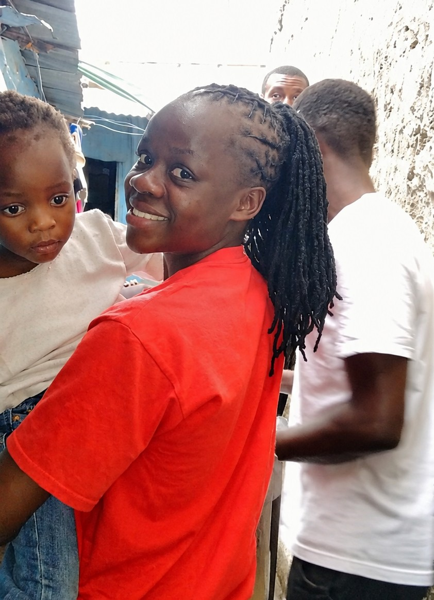
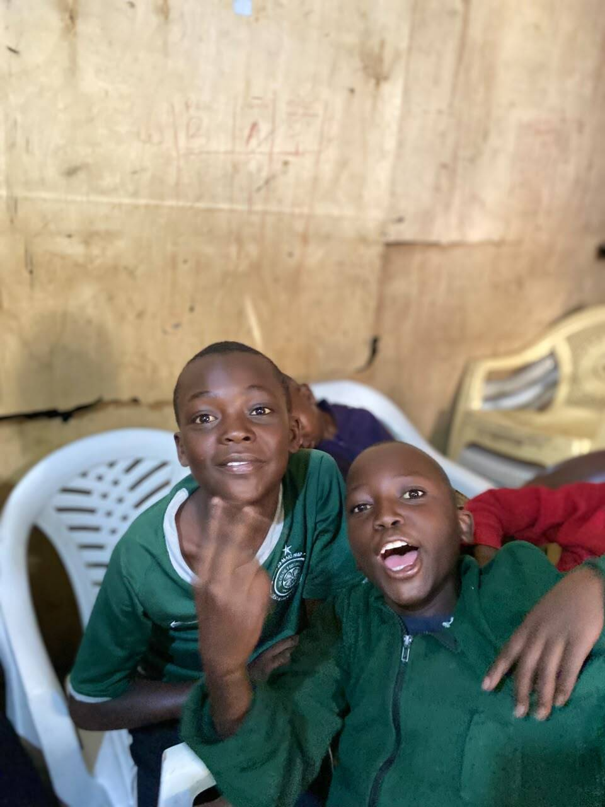

"One visit can mean so much."
A short visit and a few kind words gave one child the confidence to keep going with school — a small gesture that rippled further than we expected.
Support a visit →A visit is more than a delivery of supplies. It's time spent, questions asked, and a promise to come back. Here's how we approach every visit.


Children's homes and struggling families don't need a single grand gesture — they need people who keep coming back. Our visits are built around listening first, then figuring out how we can genuinely help.
We bring essential supplies when we can, but the heart of every visit is time: sitting with children, hearing what's on their mind, and creating moments of happiness that support their wellbeing.
We arrive at a children's home or family's doorstep, introduce ourselves, and settle in.
We ask questions and listen — to children, caregivers and community members — before deciding how to help.
We provide what we can — supplies, encouragement, or simply our attention — based on what's actually needed.
We build relationships that last beyond a single visit, so people know who to reach when they need us.
We check back in, track what's changed, and adjust our support for the next visit.
A few moments from our visits — placeholder accounts that will be replaced with real stories as we document them.
"One visit can mean so much."
A short visit and a few kind words gave one child the confidence to keep going with school — a small gesture that rippled further than we expected.
Support a visit →
"A meal shared is a bond formed."
When a family faced a difficult month, a food delivery from our volunteers came with something more valuable — the reminder that neighbours notice.
Support outreach →"Community shows up for community."
A neighbourhood clean-up turned into an afternoon of shared meals and conversation — proof that outreach works best when it belongs to everyone involved.
Join an activity →Volunteers are always welcome to join a children's home visit or community outreach day.